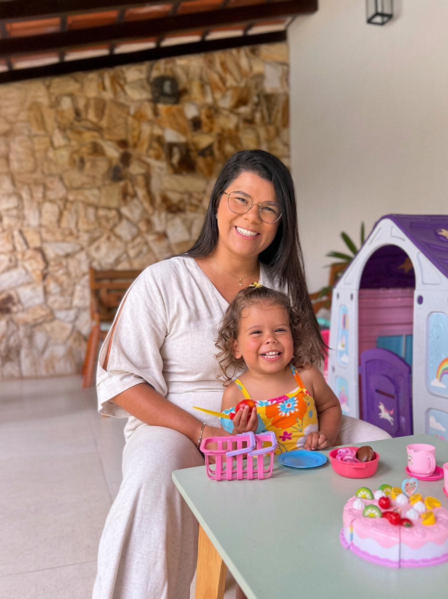

Fisioterapia Pediátrica · Respiração & Desenvolvimento
Seu filho merece
respirar bem
desde o início.
Crianças que respiram mal dormem mal, crescem com mais infecções e podem desenvolver alterações no rosto e na postura. Com o tratamento certo, tudo isso é reversível.
Agendar avaliaçãoLavagem Nasal Terapêutica
Técnica especializada que desobstrui as vias aéreas e restaura a respiração nasal em bebês e crianças.
Fisioterapia Respiratória
Protocolos para asma, bronquite e chiado que melhoram a mecânica pulmonar e reduzem crises.
Desenvolvimento Motor
Estimulação neuromotor precoce para bebês e crianças com atraso nos marcos do desenvolvimento.
Atendimento Humanizado
Abordagem lúdica e acolhedora pensada para que crianças se sintam seguras e pais tranquilos.

Cuidado especializado para a respiração do seu filho
Sou a Carol Xavier, fisioterapeuta pediátrica com especialização em respiração e desenvolvimento infantil. Acompanho crianças desde os primeiros meses de vida, ajudando famílias a entenderem que ronco, boca aberta, infecções frequentes e sono agitado não são "normais da idade" — são sinais que o corpo dá.
Com uma abordagem gentil, lúdica e baseada em evidências, trabalho junto com os pais para criar protocolos que se encaixam na rotina da família. Porque criança saudável começa por uma respiração que funciona.
Formação & Credenciais
- CREFITO · Fisioterapeuta Pediátrica
- Especialização em Fisioterapia Respiratória Pediátrica
- Formação em Motricidade Orofacial e Respiração Nasal
- Certificação em Desenvolvimento Neuromotor Infantil
O que parece normal,
mas não deveria ser
Muitas famílias convivem anos com esses sinais sem saber que existe tratamento. Quanto antes identificar, mais fácil e rápido é resolver.
Ronco e respiração pela boca
Criança que ronca, dorme de boca aberta ou baba no travesseiro pode ter obstrução nasal que compromete o sono e o desenvolvimento facial.
Sono agitado e cansaço diurno
Quando a respiração não é eficiente durante a noite, o cérebro não descansa. A criança acorda cansada, tem dificuldade de concentração e irritabilidade.
Infecções respiratórias frequentes
Otites, sinusites, bronquites e resfriados de repetição são sinais de que a via aérea superior não está funcionando como filtro — e tem solução.
Alterações no rosto e postura
Respiração bucal crônica muda o formato do rosto, a posição da mandíbula e a postura. Quanto mais cedo tratar, menos sequelas.
Chiado no peito e tosse seca
Asma, bronquite e chiado recorrente respondem muito bem à fisioterapia respiratória com técnicas específicas para a idade da criança.
Atraso no desenvolvimento motor
Bebês e crianças com dificuldade de rolar, sentar, engatinhar ou andar no tempo certo se beneficiam de estimulação neuromotor precoce e direcionada.
Como eu ajudo seu filho a respirar melhor
Cada protocolo é montado individualmente, respeitando a idade, o temperamento e a rotina da criança. Nada de receita pronta.
Lavagem Nasal Terapêutica
A lavagem nasal é muito mais do que limpeza — é uma técnica terapêutica que desobstrui as vias aéreas, reduz a inflamação da mucosa e restaura a respiração nasal. Ensinamos a técnica correta para cada faixa etária, do bebê ao adolescente, com soluções fisiológicas e posicionamento adequado para máxima eficácia e conforto.
Fisioterapia Respiratória
Técnicas manuais e exercícios adaptados para desobstruir brônquios, melhorar a mecânica respiratória e aumentar a capacidade pulmonar. Utilizamos manobras de higiene brônquica, técnicas de expiração lenta e reeducação do padrão respiratório — tudo com metodologia lúdica para que a criança coopere e goste das sessões.
Reeducação Respiratória Nasal
Crianças que respiram pela boca há muito tempo precisam reaprender a usar o nariz. Trabalhamos exercícios de fortalecimento da musculatura orofacial, treino de respiração nasal e posicionamento lingual, sempre em parceria com fonoaudiólogo e otorrino quando necessário.
Estimulação do Desenvolvimento Motor
Acompanhamos os marcos do desenvolvimento neuromotor — controle cervical, sentar, engatinhar, andar — com estimulação precoce e orientação aos pais. Quanto antes identificar e tratar um atraso, maior a janela de plasticidade cerebral e mais completa será a recuperação.
Do recém-nascido ao adolescente
Atendo crianças em todas as fases, adaptando cada protocolo à fase de desenvolvimento e às necessidades específicas de cada pequeno.
Recém-nascidos e bebês
Cólicas, dificuldade de sucção, chiado e bronquiolite têm resposta na fisioterapia pediátrica. Quanto mais cedo, melhor.
Crianças de 1 a 5 anos
Fase crítica da formação do rosto e das vias aéreas. Tratamos rinite, adenoide, respiração bucal e atrasos no desenvolvimento motor.
Crianças em idade escolar
Sono ruim compromete aprendizado. Tratamos chiado, asma, ronco e respiração bucal para que seu filho renda mais na escola.
Crianças com asma e bronquite
Protocolos respiratórios específicos que reduzem crises, diminuem dependência de medicação e melhoram a qualidade de vida.
Crianças com infecções de repetição
Otite, sinusite e amigdalite frequentes indicam que a higiene das vias aéreas pode ser melhorada. Ensinamos protocolos para a rotina em casa.
Acompanhamento pós-cirúrgico
Fisioterapia após adenoide e amígdala acelera a recuperação e garante que a criança aprenda a respirar pelo nariz de vez.
Um atendimento pensado para crianças
Sei que levar um filho pequeno ao consultório pode ser desafiador. Por isso, cada detalhe do meu atendimento foi pensado para deixar a criança à vontade e os pais tranquilos.
-
Avaliação completa na primeira consulta — anamnese detalhada com os pais, observação da respiração, postura e desenvolvimento da criança.
-
Protocolo personalizado por sessão — nenhuma sessão é igual. Adaptamos técnicas e abordagem ao humor e resposta de cada criança no dia.
-
Orientação contínua para os pais — ensinamos lavagens nasais, exercícios e hábitos que os pais replicam em casa, potencializando o resultado entre sessões.
-
Integração com outros profissionais — quando necessário, trabalhamos em conjunto com pediatra, otorrino, fonoaudiólogo e odontopediatra.

Meus pacientes
Crianças que hoje respiram, dormem e crescem com muito mais saúde e qualidade de vida.


Meu filho roncava desde bebê e eu achava que era normal. Com três meses de acompanhamento com a Carol, ele parou de roncar, passou a dormir a noite toda e ficou muito menos gripado. Eu só lamento não ter buscado ajuda antes.
Perguntas que todo pai tem
Atendo crianças desde o primeiro mês de vida. Quanto mais cedo o tratamento começar, mais fácil e rápido é resolver problemas como chiado, cólica, dificuldade de sucção e obstrução nasal. Para bebês, adaptamos todas as técnicas para máxima segurança e conforto.
Não é obrigatório. Você pode agendar diretamente. Se já tiver laudos, exames ou encaminhamento do pediatra, traga para a primeira consulta — isso enriquece a avaliação. Caso identifique necessidade de investigação complementar, indico os especialistas parceiros certos.
Depende do quadro de cada criança. Casos agudos como bronquiolite podem responder em 3 a 5 sessões. Questões crônicas como respiração bucal e rinite persistente geralmente precisam de acompanhamento por 2 a 4 meses. Na avaliação inicial, apresento uma estimativa real para o seu filho.
A lavagem nasal assusta muito os pais no início, mas com a técnica certa é rápida e bem tolerada pelas crianças. Na consulta, ensino o posicionamento correto para cada faixa etária — do bebê ao adolescente — e fico disponível para tirar dúvidas durante o processo de adaptação em casa.
Sim, muito. A fisioterapia respiratória não substitui a medicação de controle, mas é comprovadamente eficaz em reduzir a frequência e gravidade das crises, melhorar a expansibilidade pulmonar e ensinar a criança a lidar melhor com as situações de broncoespasmo. Trabalhamos sempre em conjunto com o pneumopediatra ou alergista responsável.
Essa é uma das partes que mais me dedico. Todo o atendimento é pensado como uma brincadeira — usamos jogos, histórias e recursos lúdicos para que a criança nem perceba que está "em tratamento". A grande maioria das crianças fica ansiosa para voltar às sessões. A cooperação vem naturalmente quando a criança se sente segura.

Seu filho merece respirar
com liberdade.
A primeira avaliação é o passo mais importante. Vamos entender o que está acontecendo e traçar juntos o melhor caminho para a saúde respiratória do seu filho.
Agendar pelo WhatsApp